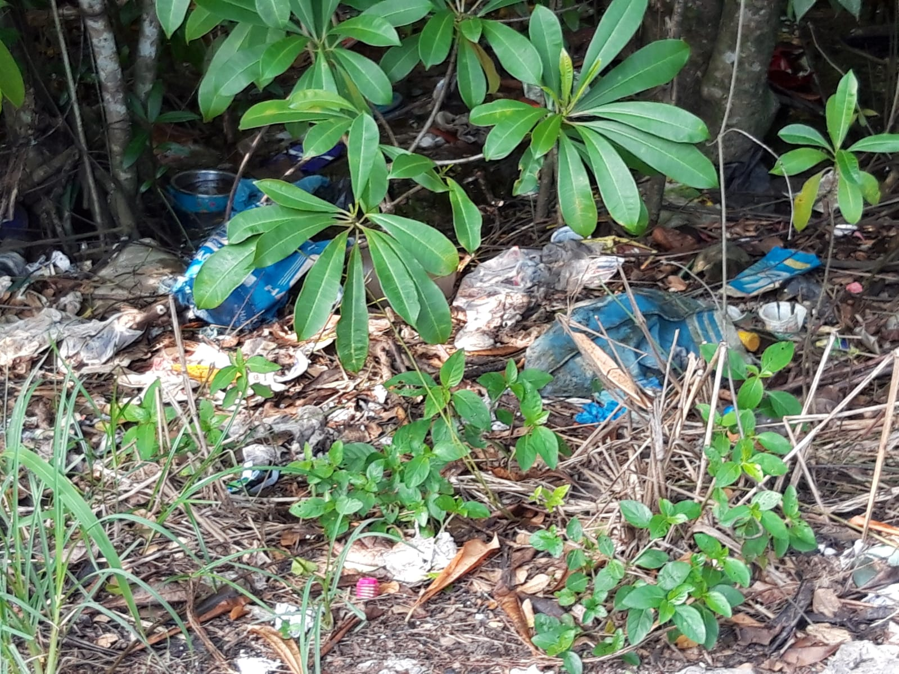

Recycling is a process of converting waste materials into reusable objects
to prevent waste of potentially useful materials, reduce the consumption of fresh raw materials,
energy usage, air pollution (from incineration), and water pollution (from landfilling).
Recycling helps in conserving natural resources by reducing the need for raw materials extraction.
For example, recycling paper saves trees, recycling metals reduces the need for mining, and recycling plastic conserves oil.
Recycling helps in reducing pollution associated with the extraction, processing, and transportation of raw materials.
For instance, recycling paper reduces air pollution from paper mills, and recycling metals
reduces greenhouse gas emissions associated with mining and refining.
By diverting materials from landfills, recycling helps in reducing the amount of waste that ends up in landfills.
| Material | Description |
|---|---|
| Paper | Newspapers, magazines, office paper, cardboard, and paper packaging. |
| Plastic | PET (polyethylene terephthalate) bottles, HDPE (high-density polyethylene) containers, PVC (polyvinyl chloride) containers, LDPE (low-density polyethylene) plastic bags, PP (polypropylene) containers, and PS (polystyrene) containers. |
| Metal | Aluminum cans, steel cans, tin cans, aluminum foil, and scrap metal. |
| Glass | Clear, green, and brown glass bottles and jars. |
